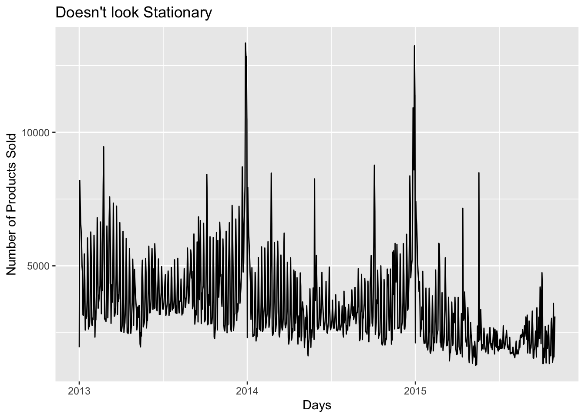
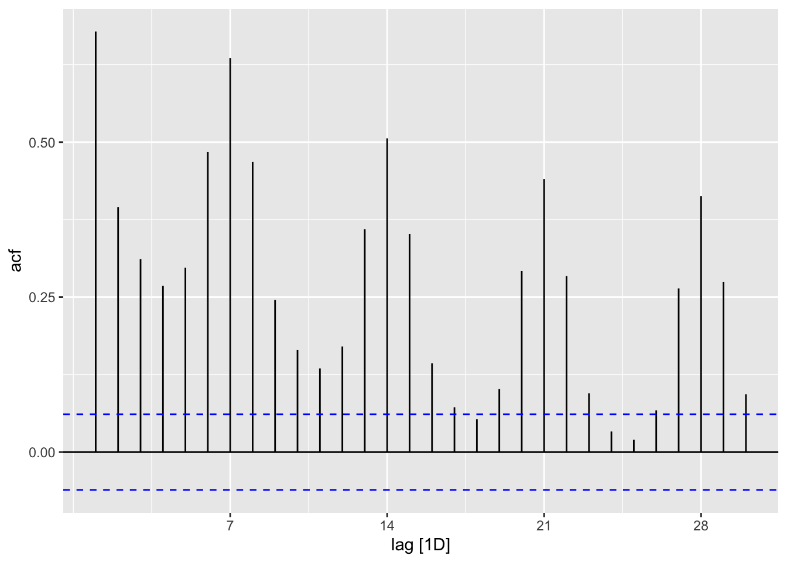
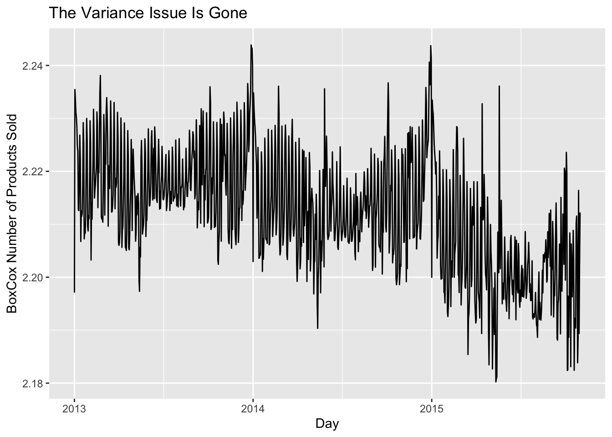
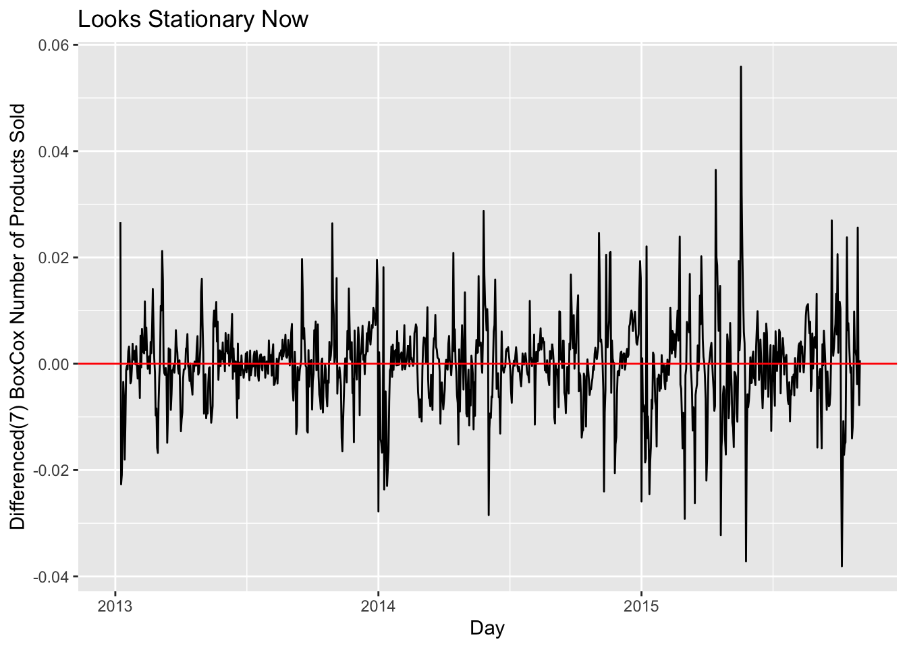
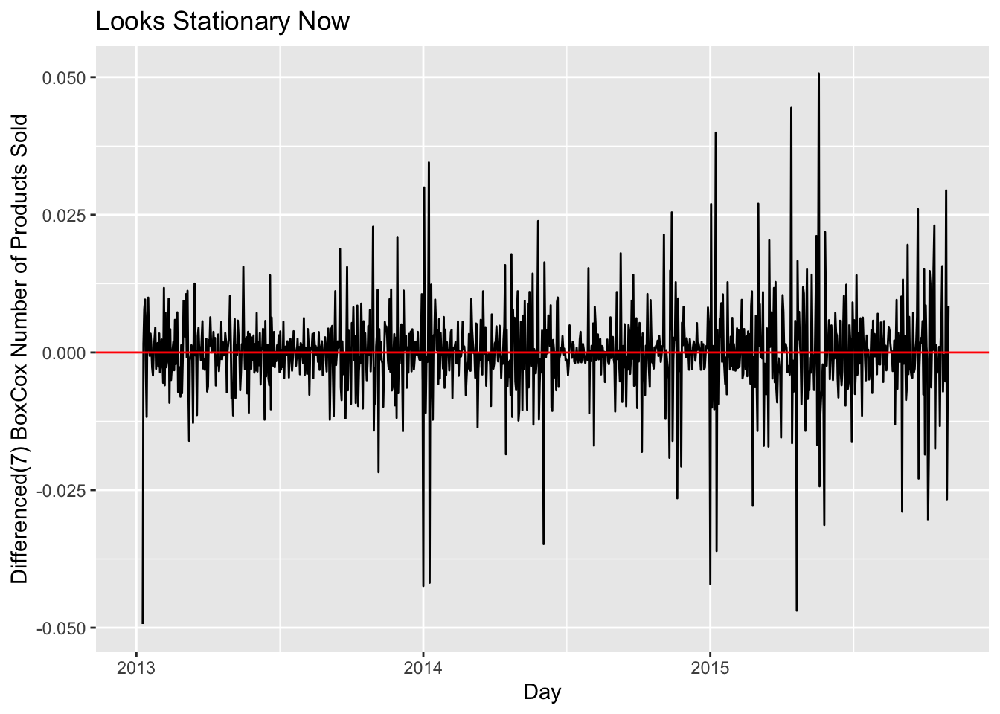
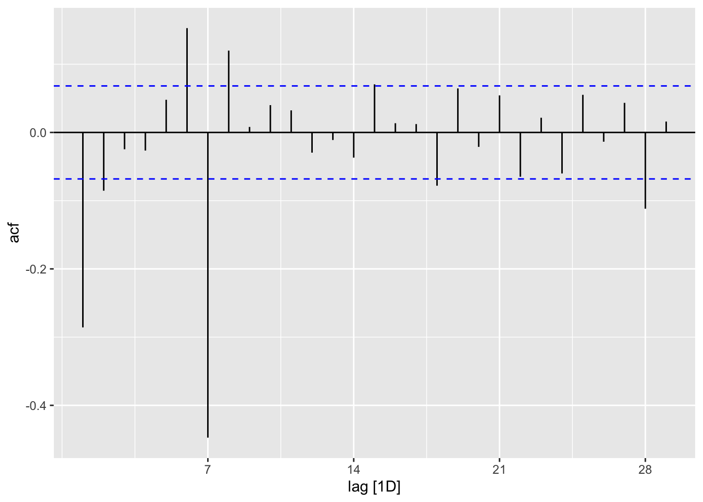
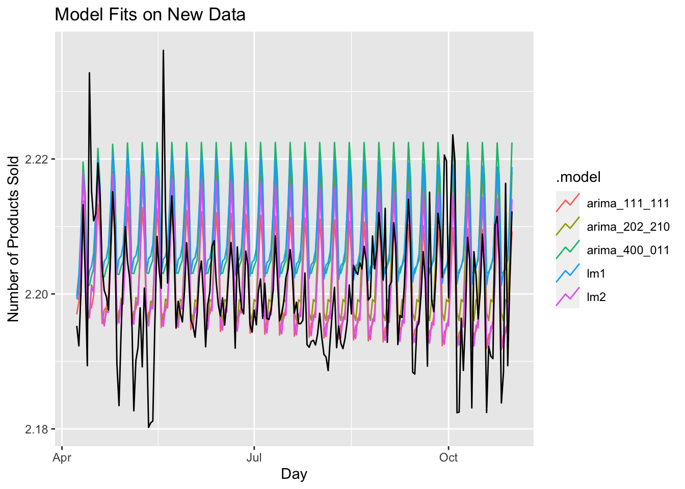
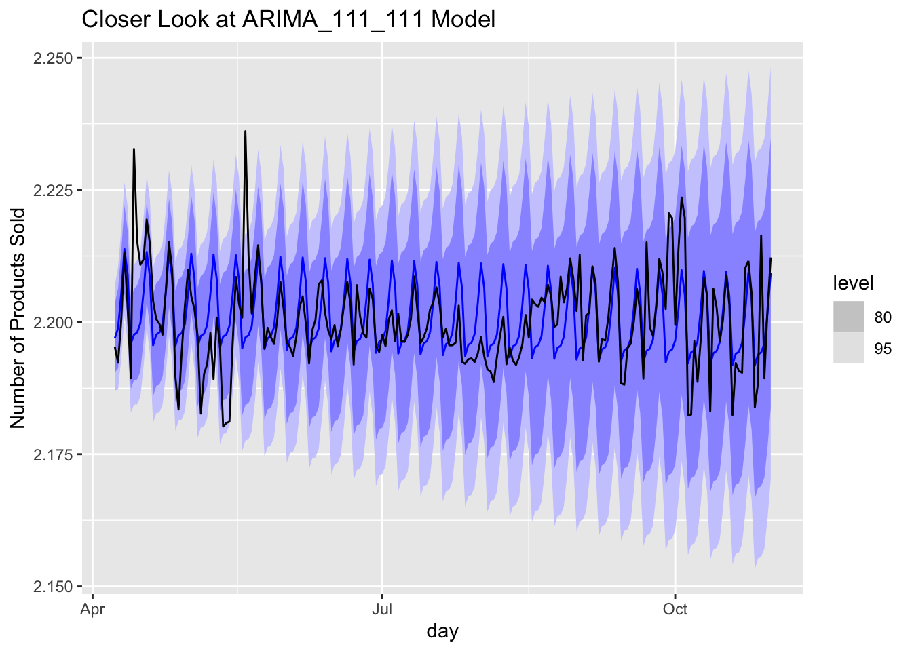

library(tidyverse)## ── Attaching packages ────────────────────────── tidyverse 1.3.0 ──## ✓ ggplot2 3.3.0 ✓ purrr 0.3.4
## ✓ tibble 3.0.3 ✓ dplyr 1.0.1
## ✓ tidyr 1.1.1 ✓ stringr 1.4.0
## ✓ readr 1.3.1 ✓ forcats 0.4.0## ── Conflicts ───────────────────────────── tidyverse_conflicts() ──
## x dplyr::filter() masks stats::filter()
## x dplyr::lag() masks stats::lag()library(forecast)## Registered S3 method overwritten by 'quantmod':
## method from
## as.zoo.data.frame zoolibrary(feasts)## Loading required package: fabletools##
## Attaching package: 'fabletools'## The following objects are masked from 'package:forecast':
##
## accuracy, forecastlibrary(fable)
library(tsibble)
library(lubridate)##
## Attaching package: 'lubridate'## The following objects are masked from 'package:tsibble':
##
## interval, new_interval## The following object is masked from 'package:base':
##
## datelibrary(tidymodels)## ── Attaching packages ───────────────────────── tidymodels 0.1.0 ──## ✓ broom 0.5.6 ✓ rsample 0.0.7
## ✓ dials 0.0.8 ✓ tune 0.1.1
## ✓ infer 0.5.2 ✓ workflows 0.2.1
## ✓ parsnip 0.1.4 ✓ yardstick 0.0.7
## ✓ recipes 0.1.10## ── Conflicts ──────────────────────────── tidymodels_conflicts() ──
## x yardstick::accuracy() masks fabletools::accuracy(), forecast::accuracy()
## x scales::discard() masks purrr::discard()
## x dplyr::filter() masks stats::filter()
## x recipes::fixed() masks stringr::fixed()
## x infer::generate() masks fabletools::generate()
## x dplyr::lag() masks stats::lag()
## x parsnip::null_model() masks fabletools::null_model()
## x yardstick::spec() masks readr::spec()
## x recipes::step() masks stats::step()sales_data <- read_csv("/Users/rashawnhoward/Downloads/sales_train.csv")## Parsed with column specification:
## cols(
## date = col_character(),
## date_block_num = col_double(),
## shop_id = col_double(),
## item_id = col_double(),
## item_price = col_double(),
## item_cnt_day = col_double()
## )glimpse(sales_data)## Rows: 2,935,849
## Columns: 6
## $ date <chr> "02.01.2013", "03.01.2013", "05.01.2013", "06.01.2013"…
## $ date_block_num <dbl> 0, 0, 0, 0, 0, 0, 0, 0, 0, 0, 0, 0, 0, 0, 0, 0, 0, 0, …
## $ shop_id <dbl> 59, 25, 25, 25, 25, 25, 25, 25, 25, 25, 25, 25, 25, 25…
## $ item_id <dbl> 22154, 2552, 2552, 2554, 2555, 2564, 2565, 2572, 2572,…
## $ item_price <dbl> 999.00, 899.00, 899.00, 1709.05, 1099.00, 349.00, 549.…
## $ item_cnt_day <dbl> 1, 1, -1, 1, 1, 1, 1, 1, 1, 3, 2, 1, 1, 2, 1, 2, 1, 1,…The data being from kaggle it fairly clean, we just need to get the data into the correct format to perform our analysis. The Competetion wanted to predict total sales for each shop, while we will be predicting total sales as a whole. From the glimpse function we can see that the date column is of type chr and needs to be converted to type Date, also item cnt day will need to summed for the different shops on the same date (e.g we will group_by date). The chunck of code below will do this.
sales_data %>%
mutate(date = dmy(date)) %>% # Change date column to type date
group_by(date) %>%
summarise(item_cnt_day = sum(item_cnt_day)) %>%
as_tsibble(index = date) -> sales_data # Make data a time series object (easier to work with)!## `summarise()` ungrouping output (override with `.groups` argument) # Assign changes to sales dataThe data Doesn’t look stationary. We can see a slight trend downward in the recent year. Two higher than normal peeks at the beginning of 2014 and the begining of 2015, I’m not sure what caused these peeks, but this should be fixed with a tranformation. We can see a cyclic and seasonal pattern in the data as well and should be taken into account when modeling.
sales_data %>%
ggplot(aes(date,item_cnt_day)) +
geom_line() +
xlab("Days") +
ylab("Number of Products Sold") +
ggtitle("Doesn't look Stationary") Looking at the ACF plot below we can see that the data has high peeks at 7, 14, 21, and 28. Suggesting that the data is weekly seasonal.
sales_data %>%
ACF() %>%
autoplot()## Response variable not specified, automatically selected `var = item_cnt_day` We can see the BoxCox fixed the Variance issue from the first plot, and we can see stationarity from second plot. We can also add another difference on to this, looking at the nsdiff and ndiff function we see that the data needs a seasonal difference and a regular difference.
lambda <- sales_data %>% # Find Best Lambda Value
features(item_cnt_day,features = guerrero) %>%
pull(lambda_guerrero)
sales_data %>% # Apply BoxCox Transformation # assign to sales data
mutate(item_cnt_day = box_cox(item_cnt_day,lambda)) -> sales_data
sales_data %>% # Plot what data looks like now
autoplot() +
xlab("Day") +
ylab("BoxCox Number of Products Sold") +
ggtitle("The Variance Issue Is Gone") # still see trend, need to diffference data## Plot variable not specified, automatically selected `.vars = item_cnt_day`
# What kind of differences do we need?
sales_data %>%
features(item_cnt_day,unitroot_ndiffs) # We have a trend component## # A tibble: 1 x 1
## ndiffs
## <int>
## 1 1sales_data %>%
features(item_cnt_day,unitroot_nsdiffs) # We have a seasonal component## # A tibble: 1 x 1
## nsdiffs
## <int>
## 1 1sales_data %>% # Plot to see if data is stationary
mutate(item_cnt_day = difference(item_cnt_day,7)) %>%
autoplot() +
geom_hline(yintercept = 0, col="red") +
xlab("Day") +
ylab("Differenced(7) BoxCox Number of Products Sold") +
ggtitle("Looks Stationary Now")## Plot variable not specified, automatically selected `.vars = item_cnt_day`## Warning: Removed 7 row(s) containing missing values (geom_path).
sales_data %>% # Plot to see if data is stationary (extra difference plot)
mutate(item_cnt_day = difference(item_cnt_day,7) %>% difference()) %>%
autoplot() +
geom_hline(yintercept = 0, col="red") +
xlab("Day") +
ylab("Differenced(7) BoxCox Number of Products Sold") +
ggtitle("Looks Stationary Now")## Plot variable not specified, automatically selected `.vars = item_cnt_day`## Warning: Removed 8 row(s) containing missing values (geom_path).
Make a training and test set
split <- initial_time_split(sales_data,prop = 0.8)
test <- testing(split)
train <- training(split)Looking at the ACF plot below, we see a big lag at 7 this suggest a seasonal MA component. There is also a lag at 28 This might suggest 2 seasonal MA components, but this lag is really small and we may not need this component(we can test different models). We can see some other regular MA components 2 maybe 4.
train %>%
mutate(item_cnt_day = difference(item_cnt_day,7) %>% difference()) %>%
ACF() %>%
autoplot()## Response variable not specified, automatically selected `var = item_cnt_day` Looking at the PACF plot below, we can see big lags at 7, 14, 21, and 28 which could suggest 4 seasonal AR componets. Its hard to tell how many regular components could be 2 or more.
train %>%
mutate(item_cnt_day = difference(item_cnt_day,7) %>% difference()) %>%
PACF() %>%
autoplot()## Response variable not specified, automatically selected `var = item_cnt_day`The EACF plot suggest an MA(2) ARMA(2,2) ARMA(3,1)
TSA::eacf(train$item_cnt_day)## Registered S3 methods overwritten by 'TSA':
## method from
## fitted.Arima forecast
## plot.Arima forecast## AR/MA
## 0 1 2 3 4 5 6 7 8 9 10 11 12 13
## 0 x x o o x x x x x o o o x x
## 1 x x x o o x x x x x o o x x
## 2 x x o o o o x x x o o o o x
## 3 x o x o o o x x o x o o o x
## 4 x x o o o o x x x o o o o x
## 5 x x x o o x x x x o o o x x
## 6 x x x o x x x x x o x x x x
## 7 x x x x x x x x o o o o o oSeems my model has a lower AICc score than the automated model
train %>% # Automated model chosen by auto.arima function
model(ARIMA(item_cnt_day,stepwise=FALSE,approximation = FALSE)) %>%
report()## Series: item_cnt_day
## Model: ARIMA(4,0,0)(0,1,1)[7]
##
## Coefficients:
## ar1 ar2 ar3 ar4 sma1
## 0.5921 0.0517 0.0358 0.0853 -0.9171
## s.e. 0.0371 0.0418 0.0421 0.0363 0.0325
##
## sigma^2 estimated as 2.648e-05: log likelihood=3154.27
## AIC=-6296.54 AICc=-6296.43 BIC=-6268.28train %>% # My model
model(ARIMA(item_cnt_day~pdq(p=2:4,0:2,q=2:4,p_init=2,q_init=2)+PDQ(P=1:4,1,Q=0:2,P_init=1,Q_init=1))) %>%
report()## Series: item_cnt_day
## Model: ARIMA(2,0,2)(2,1,0)[7]
##
## Coefficients:
## ar1 ar2 ma1 ma2 sar1 sar2
## 0.7758 0.0444 -0.2288 -0.1342 -0.6031 -0.2997
## s.e. 0.4516 0.3485 0.4492 0.1211 0.0362 0.0352
##
## sigma^2 estimated as 3.126e-05: log likelihood=3091.41
## AIC=-6168.82 AICc=-6168.68 BIC=-6135.86fit <- train %>%
model(arima_400_011 = ARIMA(item_cnt_day~pdq(4,0,0)+PDQ(0,1,1)),
arima_202_210 = ARIMA(item_cnt_day~pdq(2,0,2)+PDQ(2,1,0)),
arima_111_111 = ARIMA(item_cnt_day~pdq(1,1,1) + PDQ(1,1,1)),
lm1 = ARIMA(item_cnt_day~0+date+pdq(4,0,0)+PDQ(0,1,1)),
lm2 = ARIMA(item_cnt_day~0+date+pdq(2,0,2)+PDQ(2,1,0)))fit %>%
forecast(test) %>%
autoplot(test,level = NULL) +
xlab("Day") +
ylab("Number of Products Sold") +
ggtitle("Model Fits on New Data") Looks like the arima_111_111 model did the best on the test set with RMSE = 0.008234140
fit %>%
forecast(test) %>%
fabletools::accuracy(test)## # A tibble: 5 x 9
## .model .type ME RMSE MAE MPE MAPE MASE ACF1
## <chr> <chr> <dbl> <dbl> <dbl> <dbl> <dbl> <dbl> <dbl>
## 1 arima_111_111 Test -0.000353 0.00823 0.00580 -0.0172 0.263 NaN 0.465
## 2 arima_202_210 Test -0.00348 0.00951 0.00732 -0.159 0.333 NaN 0.450
## 3 arima_400_011 Test -0.00904 0.0125 0.0108 -0.412 0.491 NaN 0.479
## 4 lm1 Test -0.00880 0.0121 0.0105 -0.401 0.477 NaN 0.471
## 5 lm2 Test -0.00136 0.00900 0.00654 -0.0628 0.297 NaN 0.456A closer look at the arima_111_111 model on the test data
train %>%
model(ARIMA(item_cnt_day~pdq(1,1,1)+PDQ(1,1,1))) %>%
forecast(test) %>%
autoplot(test) +
xlab("day") +
ylab("Number of Products Sold") +
ggtitle("Closer Look at ARIMA_111_111 Model")